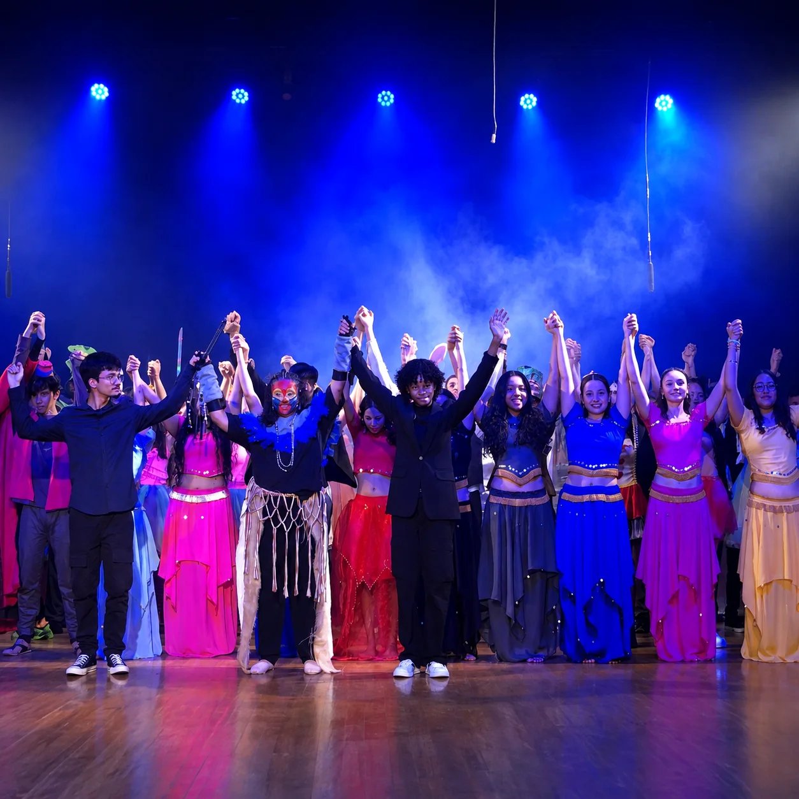

Aprender
Ensino de qualidade, professores preparados, Sistema COC e metodologia atual.
Uma escola que une tradição, Sistema COC, acompanhamento próximo e experiências reais para ajudar cada aluno a crescer com confiança.

O Perini valoriza aprendizagem, pertencimento e formação humana. Cada estudante é acolhido em sua individualidade e incentivado a desenvolver seu potencial.

Ensino de qualidade, professores preparados, Sistema COC e metodologia atual.
Uma escola acolhedora, onde cada aluno é conhecido pelo nome.
Projetos que desenvolvem autonomia, criatividade, responsabilidade e cidadania.
Da base ao vestibular, a proposta amadurece com o aluno sem perder acolhimento, acompanhamento e identidade Perini.

Leitura, escrita, raciocínio, convivência e organização em uma fase que pede acolhimento e presença.

O aluno cresce, amplia repertório, fortalece vínculos e aprende a estudar com mais responsabilidade.

Base, autonomia, simulados, estratégias de estudo e acompanhamento para ENEM, vestibulares e vida universitária.
Desde 1987, a escola ampliou sua atuação acompanhando seus estudantes: da Educação Infantil ao Ensino Fundamental e, depois, ao Ensino Médio. Cada avanço preservou a essência: o olhar atento para cada estudante.
Agende uma visitaUma história que começou com cuidado, afeto e aprendizagem significativa.
Fundamental I para construir segurança acadêmica e emocional.
Fundamental II com pertencimento, projetos e responsabilidade.
Ensino Médio com preparação contínua e acompanhamento.
O material didático, a plataforma digital, as avaliações, os simulados e os recursos tecnológicos são usados com intencionalidade pedagógica. O COC organiza o caminho; o Perini acompanha o aluno de perto.
Acessar Portal do AlunoA escola também forma quando o aluno pesquisa, cria, apresenta, convive, visita espaços reais e transforma conhecimento em ação.

As vivências desenvolvem comunicação, criatividade, pensamento crítico, colaboração e cidadania.


No Ensino Médio, o aluno constrói base, autonomia e estratégias de estudo desde a 1ª série, com acompanhamento, avaliações e simulados.
Conteúdos do Ensino Médio, avaliações COC e primeiros contatos com simulados no formato ENEM.
Resolução de questões e aperfeiçoamento de estratégias de prova.

Nossa equipe une formação, didática, planejamento e sensibilidade para acompanhar o desenvolvimento dos estudantes em cada etapa.


A estrutura da escola aparece na rotina: salas, convivência, projetos, recepção das famílias e momentos que ajudam o aluno a pertencer.
Acompanhamento próximo, diálogo e parceria fortalecem o desenvolvimento de cada aluno.
Agende uma visitaUma escola onde aluno, família e educadores caminham juntos.
Agende uma visita, converse com nossa equipe e veja de perto como o Perini acompanha cada etapa da vida escolar.
Fale com a equipe do Colégio Perini ou venha conhecer a escola de perto.